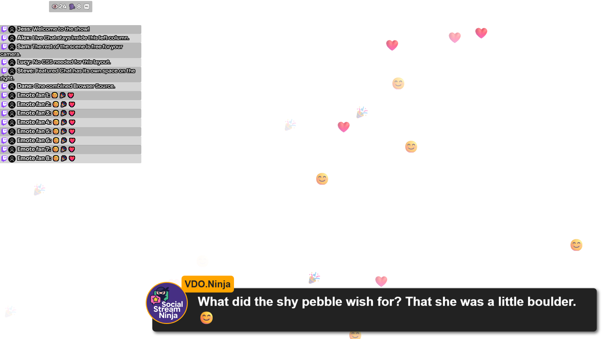

1. Spojte zachytávání v jedné relaci
Přidejte požadované zdrojové chaty v SSN a ověřte, že jedna nová zpráva z každého dorazí do stejného nefiltrovaného doku Dok chatu vysílání (Streaming Chat Dock). Tento dok si ponechte jako pohled pro obsluhu.
Kopírujte vygenerované odkazy, aby se zachovalo nastavení relace, hesla, verze a serveru. Každý pohled pro publikum přidejte jako samostatný zdroj prohlížeče v OBS. Zdroje pojmenujte výstižně, například Chat Twitch a Chat YouTube.
- Zachytávání Twitch + YouTube
- Jedna relace SSN Dok pro obsluhu vidí oba zdroje
- Pohledy OBS Pouze Twitch a pouze YouTube
2. Rozdělte průběžný chat podle platformy
Pro průběžný chat vytvořte dvě kopie vygenerované URL doku dock.html . K příslušným kopiím připojte tyto možnosti:
| Pohled pro publikum | Připojte k URL jeho doku |
|---|---|
| Chat Twitch |
&onlyfrom=twitch&hidemenu
|
| Chat YouTube |
&onlyfrom=youtube&hidemenu
|
| Twitch a YouTube společně |
&onlyfrom=twitch,youtube&hidemenu
|
| Vše kromě Discordu |
&hidefrom=discord&hidemenu
|
Například při výchozím připojení:
https://socialstream.ninja/dock.html?session=YOUR_SESSION_ID&onlyfrom=twitch&hidemenu
Použijte onlyfrom a hidefrom pro tyto stránky. Nepředpokládejte, že možnost jako onlytype z jiného překryvu funguje i zde. Použijte youtubeshorts samostatně, pokud zachytávání tento typ hlásí. Viz Typy zdrojů.
3. Rozdělte vybrané zprávy
Pro vybrané zprávy místo průběžného chatu duplikujte vygenerovaný odkaz featured.html a přidejte &onlyfrom=twitch k jedné kopii a &onlyfrom=youtube k druhé. Pro vybírání zpráv ponechte dok pro obsluhu otevřený.
Současná volba vybraných zpráv onlyfrom přijímá jeden typ zdroje. Příklad doku s hodnotami oddělenými čárkou nekopírujte do tohoto pole u vybraných zpráv.
4. Dva kanály na stejné platformě
onlyfrom=twitch vybírá platformu Twitch, nikoli konkrétní kanál Twitch. Názvy kanálů a titulky streamů jsou metadata, nikoli zaměnitelné názvy filtrů URL. Přidejte &showchannelname pro zobrazení názvů kanálů, pokud je zdroj poskytuje.
Pro pokročilé filtrování doku &filtertid=123 přijímá číselné ID původní karty; podporuje ID oddělená čárkou. Jeho hodnotu zjistíte ze skutečně zachycených dat: tid (viz Referenční příručka událostí a Příkazy a API). Nepoužívejte zde ID kanálu platformy. ID karet se při opětovném otevření zdrojů mohou změnit a zdroje bez odpovídajícího ID karty mohou být vyřazeny. Jde o volbu doku, nikoli obecný filtr kanálů pro vybrané zprávy.
Pro zcela nezávislé produkce použijte samostatné instance/profily zachytávání s různými relacemi a v každé otevřete pouze její zdroje. Pokud překryvu přidělíte jinou relaci bez odpovídajícího zachytávání, zůstane nečinný. Volba překryvu label identifikuje stránku pro směrování; není to filtr kanálu.
5. Ověřte každý pohled pro publikum
- Odešlete fiktivní testovací zprávu Twitch a YouTube do oddělené relace pomocí Vytváření testovacích zpráv.
- Ověřte, že se oba zdroje zobrazí v doku pro obsluhu a každý průběžný překryv ukazuje pouze zamýšlený zdroj.
- Vyberte postupně každou zprávu a otestujte tlačítko vymazání. Po přepnutí platformy zkontrolujte všechny viditelné stránky s vybranými zprávami.
- Opakujte test se skutečnou zprávou z každého připojeného zdroje, protože umělé zprávy nemohou určit skutečná ID zdrojových karet.
Pokud je pohled prázdný, dočasně odstraňte filtr. Vrátí-li se chat, zkontrolujte přesný typ zdroje nebo ID karty. Pokud zůstane prázdný, použijte řešení problémů s relacemi a směrováním. Změna názvu zdroje v OBS neaktualizuje jeho uloženou URL.
6. Chat a upozornění v jedné kartě prohlížeče
Použijte Spojit překryvy pro vrstvení existujících URL překryvů v jedné kartě nebo jednom zdroji prohlížeče OBS. Hodí se to při čtení chatu na telefonu během IRL streamu.
- Vložte vygenerovanou URL doku streamovaného chatu do spodní vrstvy a URL víceplatformového pole upozornění do horní. V obou odkazech zachovejte relaci, heslo a možnosti připojení.
- Ponechte Průhledné pozadí SSN zaškrtnuté. U chatu zapněte možnost „Povolit klepnutí a posouvání v této vrstvě“ a u upozornění ji vypněte, aby neblokovala ovládání chatu.
- Vyberte Náhled, potom Zobrazit QR kód a naskenujte ho fotoaparátem telefonu. Nebo vyberte Kopírovat spojený odkaz pro vložení výsledku do zdroje prohlížeče. Spojený pohled nemá ovládací prvky nastavení.
Můžete přidat až osm URL a tlačítky se šipkami přesouvat vrstvu za jinou nebo před ni. Vrstvy standardně vyplňují prohlížeč. Rozbalte Velikost a poloha u vrstvy a nastavte její šířku, výšku, levé a horní odsazení v pixelech (například 450) nebo procenta (například 100%). Prázdná šířka a výška vyplní prohlížeč; prázdné odsazení začíná v levém horním rohu. Obnovit celou obrazovku vymaže umístění této vrstvy. Každý překryv si ponechá vlastní obsah a nastavení.
Pro levý sloupec chatu ve zdroji prohlížeče OBS o velikosti 1920×1080 nastavte šířku vrstvy chatu na 450, výšku na 1080, levé odsazení na 0, a horní odsazení na 0. Ostatní vrstvy mohou zůstat přes celou obrazovku. Pro Hype nad chatem a vybrané zprávy posunuté vpravo použijte níže uvedený postup rozvržení OBS. Rozměry v pixelech zůstávají při změně velikosti prohlížeče pevné; procenta se řídí jeho šířkou nebo výškou.
Upravitelným odkazem znovu otevřete nastavení s vyplněnými URL a umístěním. Chcete-li spojený odkaz upravit později, přidejte ?edit=1 před jeho #.
Odkazy a možnosti vrstev se v tomto prohlížeči automaticky ukládají, včetně nedokončených nastavení. Znovu otevřete Spojit překryvy a pokračujte v úpravách, nebo vyberte Vymazat uložené nastavení pro nový začátek. V anonymním prohlížení může být úložiště prohlížeče nedostupné nebo dočasné.
Spojený odkaz a QR kód obsahují úplné rozvržení i URL. Nastavte je na počítači, jednou naskenujte na mobilu a spojený pohled přidejte do záložek. Otevřením se nastavení uloží také v prohlížeči telefonu. Změny na počítači automaticky neaktualizují starší odkaz: po úpravě nový odkaz zkopírujte nebo naskenujte. Funkce nesynchronizuje nastavení přes ID relace.
Spojené odkazy a QR kódy uchovávejte stejně soukromě jako jednotlivé odkazy překryvů. Zachytávání SSN musí nadále běžet a telefon musí mít přístup k serverům původních URL. Adresa localhost nebo 127.0.0.1 odkazuje na zařízení, které odkaz otevírá. Velmi dlouhé URL mohou přesáhnout kapacitu QR kódu; spojený odkaz lze stále zkopírovat.
Postup pro OBS: levý sloupec chatu s efekty přes celou obrazovku
Pro toto rozvržení nepotřebujete CSS. Každá vrstva má vlastní oblast prohlížeče. Celkový zdroj prohlížeče v OBS nastavte na 1920×1080, pak u každé vrstvy použijte tyto hodnoty v části Velikost a poloha. Zadejte pouze čísla bez čárek a „px“. Vrstvy přidejte v tomto pořadí, odspodu:
| Vrstva | Šířka | Výška | Vlevo | Nahoře |
|---|---|---|---|---|
| 1. Živý chat / dok | 450 | 1000 | 0 | 80 |
| 2. Počítadlo Hype | 450 | 80 | 0 | 0 |
| 3. Stěna emoji / emotikonů | 1920 | 1080 | 0 | 0 |
| 4. Vybrané zprávy | 1470 | 1080 | 450 | 0 |
| 5. NinjaBacker (volitelné) | 1920 | 1080 | 0 | 0 |
Prvních 80 pixelů je vyhrazeno pro Hype a pod ním zbývá sloupec chatu široký 450 pixelů. Chcete-li místo toho chat přes celou výšku za Hype, nastavte výšku živého chatu na 1080 a horní odsazení na 0. Jiné rozměry scény vyžadují jiné hodnoty v pixelech.
- Vložte úplné URL svých překryvů. Zkopírujte je z vlastností stávajícího zdroje prohlížeče a zachovejte relaci, heslo, styly a nastavení připojení. Ponechte Průhledné pozadí SSN zaškrtnuté. Oříznutí, transformace, filtry a pole Vlastní CSS v OBS nejsou součástí URL a nepřenášejí se.
- Vystřeďte Hype ve sloupci. V jeho
hype.htmlURL nastavtealign=center(nahraďte existujícíalign=leftneboalign=right, a odstraňtealignrightpokud existuje). U URL, která už obsahuje?session=..., připojte&align=center. Volitelný kompaktní výchozí styl je&combineall&hidetitle&style=compact&scale=0.75; existující hodnoty nahraďte, neduplikujte je. Pokud zvolený styl potřebuje více místa, zvětšete výšku vrstvy Hype. - Umístěte vybrané zprávy mimo sloupec chatu. Nastavte Vlevo = 450 a Šířka = 1470 společně: 450 + 1470 = 1920. Posunutí vrstvy široké 1920 o 450 doprava by ořízlo její pravý okraj. Vybrané zprávy se nadále zobrazují u dolního okraje vlastní oblasti. Chcete-li v ní kratší zprávy vystředit, přidejte
¢erk jehofeatured.htmlURL. Pro vystředění zpráv přes celou scénu místo toho použijte Vlevo = 0, Šířka = 1920 a¢er. - Ponechte NinjaBacker nad vybranými zprávami. Vložte URL jeho překryvu pro diváky jako poslední vrstvu se stávajícím nastavením animace příjezdu zprava. Nástroj pro spojování řídí oblast a pořadí vrstev; překryv NinjaBacker řídí animaci a vnitřní umístění. Pozadí musí být průhledné a web musí povolovat vložení. Tato volitelná vrstva nebyla součástí testu se čtyřmi překryvy.
- Náhled v rozlišení 1920×1080. Odešlete testovací zprávu s emoji, vyberte zprávu z doku a povolte data Hype v SSN. Samotný běžný chat zprávu pro překryv vybraných zpráv nevybere. Zůstane-li některý překryv prázdný, ověřte ho samostatně.
- Zkopírujte nový spojený odkaz do OBS. Ve vlastnostech tohoto zdroje prohlížeče nastavte Šířku na 1920 a Výšku na 1080. Velikost náhledu spojovacího nástroje nenastavuje rozměry OBS. Přizpůsobte nový zdroj scéně bez oříznutí. Po každé změně rozvržení znovu zkopírujte spojený odkaz; starší odkaz v OBS si ponechá původní rozvržení.

Výkon: jeden zdroj prohlížeče stále spouští každý vložený překryv a jeho připojení. Spojení snižuje počet zdrojů OBS, ale nezaručuje nižší využití CPU nebo paměti. Po dokončení zavřete náhled v prohlížeči a porovnejte výkon OBS s vypnutými starými zdroji. Výkon M1 macOS/OBS i vaši konkrétní URL NinjaBacker je stále nutné ověřit ve vaší sestavě. Pokud to funguje lépe, ponechte živý chat samostatně a spojte pouze ostatní překryvy.
Pokud je vrstva prázdná nebo zakrývá chat
- Nejprve otevřete každou původní URL samostatně. Upozornění obvykle zůstávají prázdná, dokud nepřijde událost; spojení stránek nezachytává nové události.
- Automatická průhlednost podporuje
dock.html,featured.html,multi-alerts.html, aminecraft.html. Jiné stránky potřebují vlastní nastavení průhledného pozadí. Některé externí weby vkládání zcela blokují. - I průhledná vrstva může blokovat klepnutí. Vypněte Povolit klepnutí a posouvání u každé vrstvy nad chatem, která nepotřebuje interakci.
- Mobilní prohlížeče mohou před přehráním zvuku vyžadovat interakci se stránkou. V případě potřeby ji pro danou vrstvu povolte a klepněte na ni; omezení automatického přehrávání nadále platí. Než se na zvuk spolehnete, ověřte ho na skutečném telefonu.